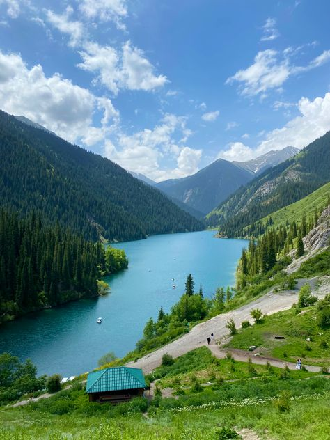
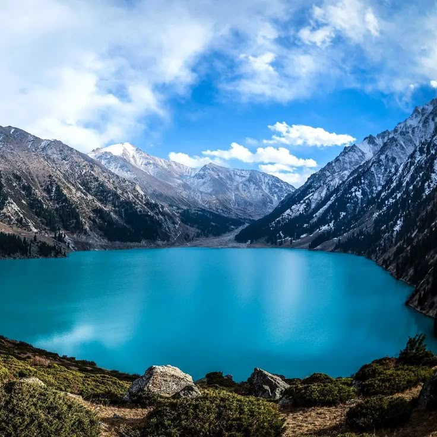

Kolsai Lakes – "Pearl of the Northern Tien Shan"
The Kolsai Lakes are three stunning alpine lakes located in the Kolsai Gorge at an altitude of 1,800 to 2,850 meters. They are considered some of the most beautiful natural sights in Kazakhstan, attracting visitors with crystal-clear waters, mountain views, and rich flora.
- Number of lakes: 3 (Lower, Middle, Upper)
- Depth: up to 80 m
- Water color: deep blue
- Water temperature: +10 to +15°C in summer
Things to do
- 🕠Hiking – trail between the lakes (10 km)
- 🚣‍♂ Boat riding – calm water trips
- 🣠Fishing – trout, catch-and-release policy
- 🐎 Horseback riding – mountain routes
How to get there?
📠Almaty region, 300 km from Almaty
🚗 By car: 4–5 hours via Almaty – Saty road
🚌 Tours and taxis available from Almaty
Prices:
💰 National park entrance: 1,000 ₸/person
💰 Boat rental: from 3,000 ₸
Kolsai Lakes are the perfect place for reconnecting with nature, outdoor adventure, and capturing unforgettable photos! 🏞✨
PHOTOS

